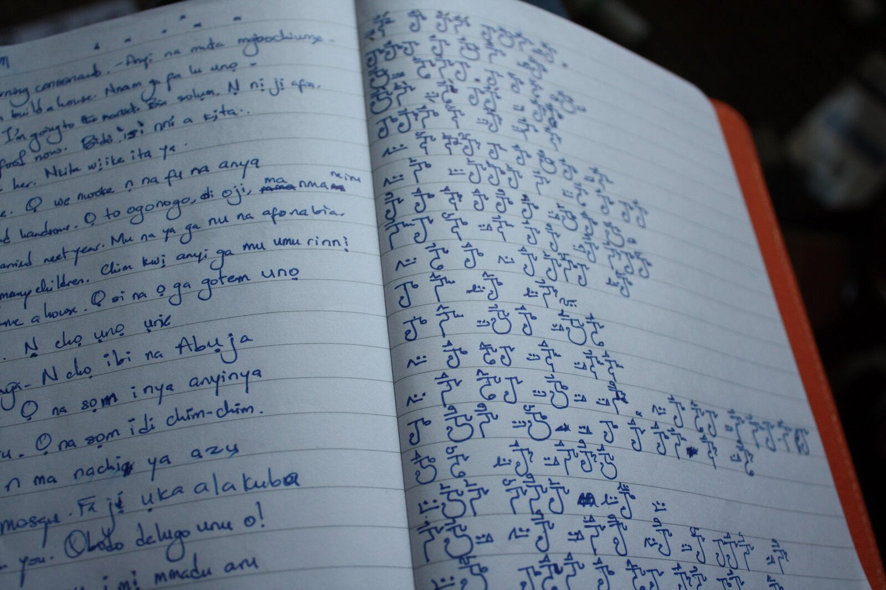
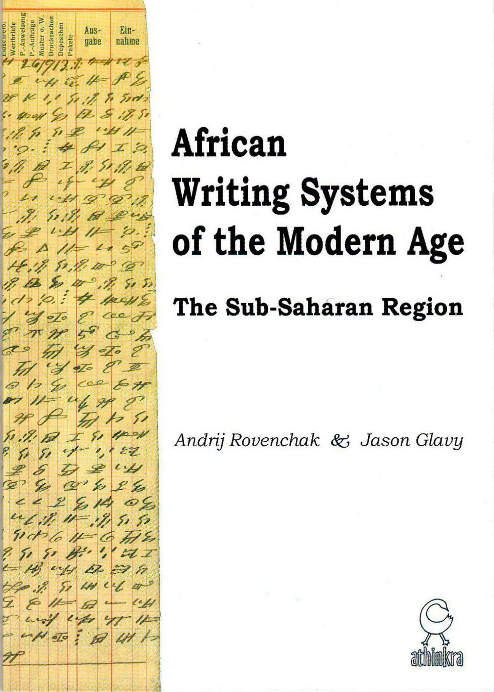
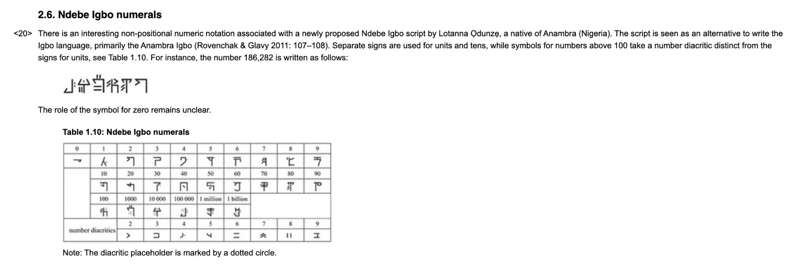
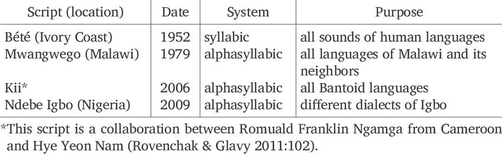

The project / Development
From an idea
to a written world.
The beginning

2009
2011

2012

2014

Anshuman Pandey, of the University of Michigan Department of History titled Expanding the Unicode Repertoire: Unencoded Scripts of Africa and Asia in consideration for Unicode adoption, although it was not considered a strong candidate at the time.
2020
A new introduction to the world
In July 2020, Lotanna shared the developed Ńdébé script and its syllabary book with a wider audience. Readers began trying the script for themselves, and features in Popula, Folio Nigeria and Channels Television introduced the work to new readers.
2023
Refining the letterforms
A September 2023 research update records Lotanna’s February announcement of letterform changes based on user feedback, alongside the availability of a keyboard.
2024–2025
The conversation continues
Open Country Mag republished the Folio Nigeria profile in March 2024. African Digital Art featured Ńdébé in February 2025, and a 2025 Lancaster University thesis included it in an overview of Igbo writing systems.
2026
From static charts to living text
The current work brings Ńdébé Rounded and Ńdébé Soft Bold together with typing tools, a searchable Script Codex, numeral references, arithmetic lessons and teaching forms.
Stems, radicals and vowels can now be demonstrated as selectable font text. Dotted placeholders show how a character is built, while the online editor lets writers compose, copy, save and reopen their work.
This website is being rebuilt in preview around those tools. The syllabary book will be rewritten using the current fonts, and the former shop will return only when the new clothing line is ready.